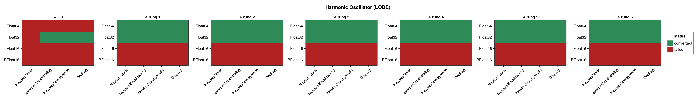
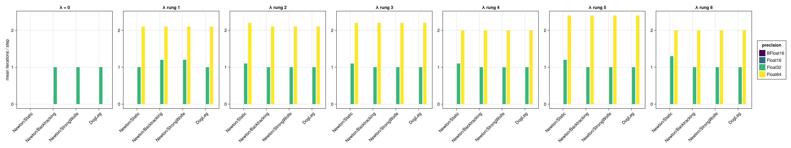
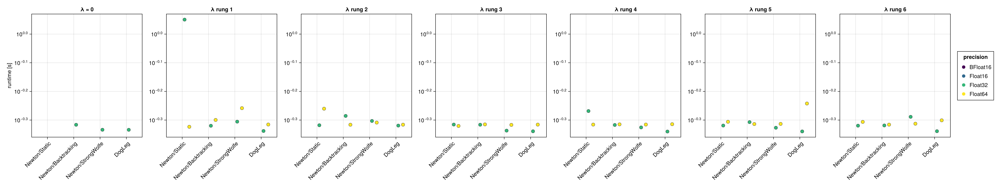
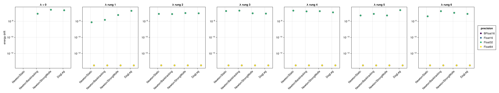
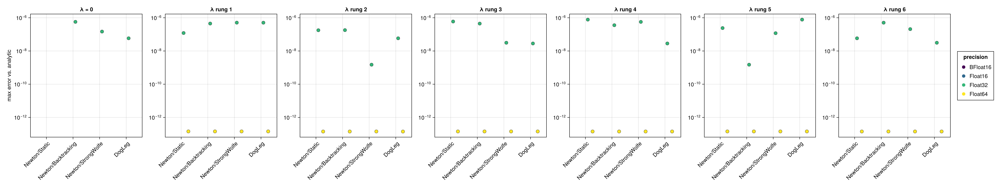
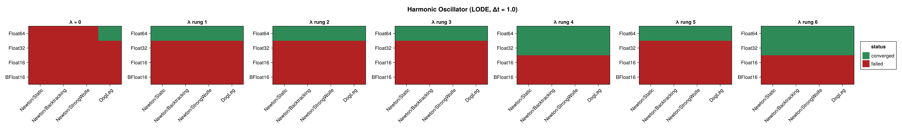
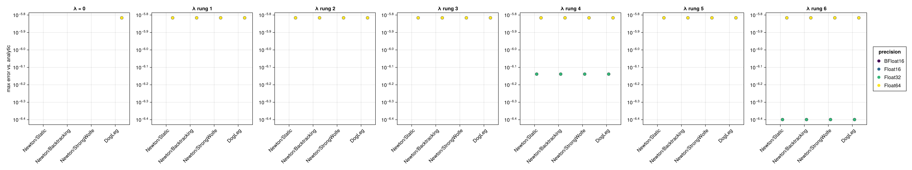
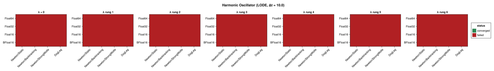
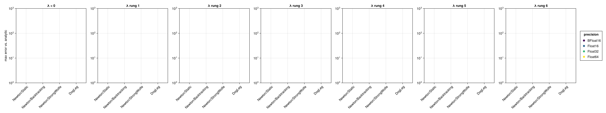

Harmonic Oscillator (Nonlinear Integrator)
This page benchmarks the neural-network variational integrator ShallowNet from NonlinearIntegrators.jl on the harmonic oscillator, built as a Lagrangian problem (lodeproblem). The integrator represents the trajectory over one time step with a one-layer network (S = 4 neurons, activation $x \mapsto \max(0,x)^3$) and enforces the discrete variational principle with an R = 8-point Gauss–Legendre quadrature; the network parameters are seeded with its built-in greedy (OGA1dNormalEquations) initial guess.
Unlike the implicit midpoint analyses, this sweep varies the nonlinear solver's regularization factor $\lambda$ (a Levenberg–Marquardt-style shift added to the Newton Jacobian diagonal) in place of the initial guess, because the network solve is near-singular — without regularization Newton does not converge. The swept options are:
| Dimension | Values |
|---|---|
| Precision | BFloat16, Float16, Float32, Float64 |
| Solver | Newton/Static, Newton/Backtracking, Newton/StrongWolfe, DogLeg |
| Regularization $\lambda$ | $0$, and rungs 1–6 of the $\sqrt{\varepsilon(T)}$ ladder |
Each run integrates ten time steps, and the three step sizes $\Delta t = 0.1, 1.0, 10.0$ therefore span $(0,1)$, $(0,10)$ and $(0,100)$. The figures below panel by $\lambda$; within each panel the solver configurations are on the x-axis and the precisions are distinguished by colour.
$\lambda$ is swept as multiples of $\sqrt{\varepsilon(T)}$, not as absolute values, so that the shift is scaled to the precision it protects. Rung 4 is $16\sqrt{\varepsilon(T)}$ — 0.5 at Float16, 5.5e-3 at Float32 — and the Float64 ladder is stretched to $2^k$ with $k = 2, 4, \dots, 12$, where rung 2 is the same $16\sqrt\varepsilon$. How the regularization factor scales has the full table; each row's own value is in the results CSV.
The benchmark is regenerated at documentation build time with a single, fast timing pass. See the driver script scripts/nonlinear_harmonic_oscillator.jl for accurate BenchmarkTools measurements.
using SolverBenchmark
spec = harmonic_oscillator_lode_spec(timespan = (0.0, 1.0), timestep = 0.1)
df = cached_sweep("nonlinear_harmonic_oscillator_dt0.1") do
run_nonlinear_benchmark(spec; timing = :quick, max_iterations = 100,
verbose = false, quiet = true)
endConvergence
Which combinations reached the solver tolerance at every time step (green), and which failed (red):
plot_convergence(df; panelcol = :regularization, title = "Harmonic Oscillator (LODE)")
Nonlinear iterations
Mean number of nonlinear-solver iterations per time step (converged runs only):
plot_iterations(df; panelcol = :regularization)
Run time
plot_runtime(df; panelcol = :regularization)
Energy drift
Drift of the conserved energy $|H(t_\text{end}) - H(0)|$:
plot_energy_drift(df; panelcol = :regularization)
Accuracy
Maximum error against the analytic solution:
plot_accuracy(df; panelcol = :regularization)
Discussion
- Regularization is essential, and it is a threshold rather than a tuned value. At $\lambda = 0$ the
Float64Newton iteration converges for no solver: it runs out its 1000-iteration budget at a residual of $\approx 3 \times 10^{-12}$, above the tolerance, because the network parameterization makes the Jacobian near-singular. Every one of the six rungs fixes it, and they are indistinguishable from each other — 2.0–2.2 iterations per step, residual $\approx 5 \times 10^{-14}$, accuracy $1.41$ to $1.44 \times 10^{-13}$ across a ladder spanning $6 \times 10^{-8}$ to $6 \times 10^{-5}$, a factor of a thousand. Nothing in this range over-damps; $\lambda$ only has to be nonzero. - The choice of line search barely matters once regularization is on: all of
Static,Backtracking,StrongWolfeandDogLegbehave almost identically, because the regularized Newton step is already close to optimal. - Both 16-bit formats fail, and regularization cannot reach the reason. No configuration converges at
Float16orBFloat16(0/28 each), at any rung. The failure is aSingularException— but not from the Newton Jacobian. It is raised inNonlinearIntegrators.initial_params!, by the $G_k x_k = b$ Gram solve of the OGA initial guess, whose third selected neuron is already linearly dependent on its predecessors at 16 bits. That runs before the Newton iteration of every step, andregularization_factorshifts only the Newton Jacobian diagonal, so no rung of the ladder can lift it. Lifting it would mean regularizing the seed's normal equations upstream.BFloat16's wider exponent does not help — the obstacle is conditioning, which wants significand bits, and it has three fewer thanFloat16. Float32reaches its residual floor ($\approx 3 \times 10^{-5}$) in about one iteration per step and is reported as converged under the relaxed tolerance used for this problem ($256\,\varepsilon$); its accuracy against the analytic solution is $\approx 5 \times 10^{-7}$. Here $\lambda = 0$ converges too — for three of the four solvers — so at this step sizeFloat32is not regularization-limited at all.- The OGA dictionary size (
dict_amount) has little effect on accuracy here: a few hundred candidate neurons match the reference's several hundred thousand, while being markedly faster. The dictionary is assembled in double precision, so it neither limits nor rescues the reduced-precision runs.
Results table
markdown_table(summary_table(df; panelcol = :regularization))| precision | solver_label | regularization | converged | iterations_mean | runtime_s | max_residual | at_tolerance | energy_drift | accuracy |
|---|---|---|---|---|---|---|---|---|---|
| BFloat16 | Newton/Static | λ = 0 | ✗ | — | — | — | ✗ | — | — |
| BFloat16 | Newton/Static | λ rung 1 | ✗ | — | — | — | ✗ | — | — |
| BFloat16 | Newton/Static | λ rung 2 | ✗ | — | — | — | ✗ | — | — |
| BFloat16 | Newton/Static | λ rung 3 | ✗ | — | — | — | ✗ | — | — |
| BFloat16 | Newton/Static | λ rung 4 | ✗ | — | — | — | ✗ | — | — |
| BFloat16 | Newton/Static | λ rung 5 | ✗ | — | — | — | ✗ | — | — |
| BFloat16 | Newton/Static | λ rung 6 | ✗ | — | — | — | ✗ | — | — |
| BFloat16 | Newton/Backtracking | λ = 0 | ✗ | — | — | — | ✗ | — | — |
| BFloat16 | Newton/Backtracking | λ rung 1 | ✗ | — | — | — | ✗ | — | — |
| BFloat16 | Newton/Backtracking | λ rung 2 | ✗ | — | — | — | ✗ | — | — |
| BFloat16 | Newton/Backtracking | λ rung 3 | ✗ | — | — | — | ✗ | — | — |
| BFloat16 | Newton/Backtracking | λ rung 4 | ✗ | — | — | — | ✗ | — | — |
| BFloat16 | Newton/Backtracking | λ rung 5 | ✗ | — | — | — | ✗ | — | — |
| BFloat16 | Newton/Backtracking | λ rung 6 | ✗ | — | — | — | ✗ | — | — |
| BFloat16 | Newton/StrongWolfe | λ = 0 | ✗ | — | — | — | ✗ | — | — |
| BFloat16 | Newton/StrongWolfe | λ rung 1 | ✗ | — | — | — | ✗ | — | — |
| BFloat16 | Newton/StrongWolfe | λ rung 2 | ✗ | — | — | — | ✗ | — | — |
| BFloat16 | Newton/StrongWolfe | λ rung 3 | ✗ | — | — | — | ✗ | — | — |
| BFloat16 | Newton/StrongWolfe | λ rung 4 | ✗ | — | — | — | ✗ | — | — |
| BFloat16 | Newton/StrongWolfe | λ rung 5 | ✗ | — | — | — | ✗ | — | — |
| BFloat16 | Newton/StrongWolfe | λ rung 6 | ✗ | — | — | — | ✗ | — | — |
| BFloat16 | DogLeg | λ = 0 | ✗ | — | — | — | ✗ | — | — |
| BFloat16 | DogLeg | λ rung 1 | ✗ | — | — | — | ✗ | — | — |
| BFloat16 | DogLeg | λ rung 2 | ✗ | — | — | — | ✗ | — | — |
| BFloat16 | DogLeg | λ rung 3 | ✗ | — | — | — | ✗ | — | — |
| BFloat16 | DogLeg | λ rung 4 | ✗ | — | — | — | ✗ | — | — |
| BFloat16 | DogLeg | λ rung 5 | ✗ | — | — | — | ✗ | — | — |
| BFloat16 | DogLeg | λ rung 6 | ✗ | — | — | — | ✗ | — | — |
| Float16 | Newton/Static | λ = 0 | ✗ | — | — | — | ✗ | — | — |
| Float16 | Newton/Static | λ rung 1 | ✗ | — | — | — | ✗ | — | — |
| Float16 | Newton/Static | λ rung 2 | ✗ | — | — | — | ✗ | — | — |
| Float16 | Newton/Static | λ rung 3 | ✗ | — | — | — | ✗ | — | — |
| Float16 | Newton/Static | λ rung 4 | ✗ | — | — | — | ✗ | — | — |
| Float16 | Newton/Static | λ rung 5 | ✗ | — | — | — | ✗ | — | — |
| Float16 | Newton/Static | λ rung 6 | ✗ | — | — | — | ✗ | — | — |
| Float16 | Newton/Backtracking | λ = 0 | ✗ | — | — | — | ✗ | — | — |
| Float16 | Newton/Backtracking | λ rung 1 | ✗ | — | — | — | ✗ | — | — |
| Float16 | Newton/Backtracking | λ rung 2 | ✗ | — | — | — | ✗ | — | — |
| Float16 | Newton/Backtracking | λ rung 3 | ✗ | — | — | — | ✗ | — | — |
| Float16 | Newton/Backtracking | λ rung 4 | ✗ | — | — | — | ✗ | — | — |
| Float16 | Newton/Backtracking | λ rung 5 | ✗ | — | — | — | ✗ | — | — |
| Float16 | Newton/Backtracking | λ rung 6 | ✗ | — | — | — | ✗ | — | — |
| Float16 | Newton/StrongWolfe | λ = 0 | ✗ | — | — | — | ✗ | — | — |
| Float16 | Newton/StrongWolfe | λ rung 1 | ✗ | — | — | — | ✗ | — | — |
| Float16 | Newton/StrongWolfe | λ rung 2 | ✗ | — | — | — | ✗ | — | — |
| Float16 | Newton/StrongWolfe | λ rung 3 | ✗ | — | — | — | ✗ | — | — |
| Float16 | Newton/StrongWolfe | λ rung 4 | ✗ | — | — | — | ✗ | — | — |
| Float16 | Newton/StrongWolfe | λ rung 5 | ✗ | — | — | — | ✗ | — | — |
| Float16 | Newton/StrongWolfe | λ rung 6 | ✗ | — | — | — | ✗ | — | — |
| Float16 | DogLeg | λ = 0 | ✗ | — | — | — | ✗ | — | — |
| Float16 | DogLeg | λ rung 1 | ✗ | — | — | — | ✗ | — | — |
| Float16 | DogLeg | λ rung 2 | ✗ | — | — | — | ✗ | — | — |
| Float16 | DogLeg | λ rung 3 | ✗ | — | — | — | ✗ | — | — |
| Float16 | DogLeg | λ rung 4 | ✗ | — | — | — | ✗ | — | — |
| Float16 | DogLeg | λ rung 5 | ✗ | — | — | — | ✗ | — | — |
| Float16 | DogLeg | λ rung 6 | ✗ | — | — | — | ✗ | — | — |
| Float32 | Newton/Static | λ = 0 | ✗ | — | — | — | ✗ | — | — |
| Float32 | Newton/Static | λ rung 1 | ✓ | 1 | 1.12 | 2.56e-05 | ✓ | 7.45e-09 | 1.21e-07 |
| Float32 | Newton/Static | λ rung 2 | ✓ | 1.1 | 0.481 | 2e-05 | ✓ | 8.2e-08 | 1.77e-07 |
| Float32 | Newton/Static | λ rung 3 | ✓ | 1.1 | 0.483 | 2.92e-05 | ✓ | 1.86e-07 | 5.95e-07 |
| Float32 | Newton/Static | λ rung 4 | ✓ | 1.1 | 0.539 | 1.83e-05 | ✓ | 2.09e-07 | 7.73e-07 |
| Float32 | Newton/Static | λ rung 5 | ✓ | 1.2 | 0.48 | 2.98e-05 | ✓ | 5.22e-08 | 2.4e-07 |
| Float32 | Newton/Static | λ rung 6 | ✓ | 1.3 | 0.479 | 2.41e-05 | ✓ | 4.1e-08 | 5.81e-08 |
| Float32 | Newton/Backtracking | λ = 0 | ✓ | 1 | 0.483 | 3.03e-05 | ✓ | 8.57e-08 | 5.68e-07 |
| Float32 | Newton/Backtracking | λ rung 1 | ✓ | 1.2 | 0.479 | 1.2e-05 | ✓ | 1.49e-08 | 4.49e-07 |
| Float32 | Newton/Backtracking | λ rung 2 | ✓ | 1 | 0.518 | 1.68e-05 | ✓ | 7.82e-08 | 1.8e-07 |
| Float32 | Newton/Backtracking | λ rung 3 | ✓ | 1 | 0.483 | 1.88e-05 | ✓ | 2.09e-07 | 4.46e-07 |
| Float32 | Newton/Backtracking | λ rung 4 | ✓ | 1 | 0.482 | 2.85e-05 | ✓ | 1.68e-07 | 3.56e-07 |
| Float32 | Newton/Backtracking | λ rung 5 | ✓ | 1 | 0.493 | 2.44e-05 | ✓ | 8.2e-08 | 1.49e-09 |
| Float32 | Newton/Backtracking | λ rung 6 | ✓ | 1 | 0.48 | 1.88e-05 | ✓ | 1.79e-07 | 5.05e-07 |
| Float32 | Newton/StrongWolfe | λ = 0 | ✓ | 1 | 0.464 | 1.31e-05 | ✓ | 2.68e-07 | 1.48e-07 |
| Float32 | Newton/StrongWolfe | λ rung 1 | ✓ | 1.2 | 0.495 | 1.93e-05 | ✓ | 5.96e-08 | 5.08e-07 |
| Float32 | Newton/StrongWolfe | λ rung 2 | ✓ | 1 | 0.498 | 2.79e-05 | ✓ | 1.04e-07 | 1.49e-09 |
| Float32 | Newton/StrongWolfe | λ rung 3 | ✓ | 1 | 0.46 | 1.76e-05 | ✓ | 9.69e-08 | 3.13e-08 |
| Float32 | Newton/StrongWolfe | λ rung 4 | ✓ | 1 | 0.472 | 1.7e-05 | ✓ | 1.79e-07 | 5.65e-07 |
| Float32 | Newton/StrongWolfe | λ rung 5 | ✓ | 1 | 0.471 | 2.18e-05 | ✓ | 5.22e-08 | 1.18e-07 |
| Float32 | Newton/StrongWolfe | λ rung 6 | ✓ | 1 | 0.514 | 1.99e-05 | ✓ | 1.12e-07 | 2.07e-07 |
| Float32 | DogLeg | λ = 0 | ✓ | 1 | 0.463 | 2.38e-05 | ✓ | 2.31e-07 | 5.81e-08 |
| Float32 | DogLeg | λ rung 1 | ✓ | 1 | 0.459 | 1.42e-05 | ✓ | 1.97e-07 | 5.05e-07 |
| Float32 | DogLeg | λ rung 2 | ✓ | 1 | 0.479 | 2.59e-05 | ✓ | 9.69e-08 | 5.81e-08 |
| Float32 | DogLeg | λ rung 3 | ✓ | 1 | 0.458 | 2.46e-05 | ✓ | 8.94e-08 | 2.83e-08 |
| Float32 | DogLeg | λ rung 4 | ✓ | 1 | 0.457 | 1.69e-05 | ✓ | 1.27e-07 | 2.83e-08 |
| Float32 | DogLeg | λ rung 5 | ✓ | 1 | 0.457 | 2.49e-05 | ✓ | 2.38e-07 | 7.73e-07 |
| Float32 | DogLeg | λ rung 6 | ✓ | 1 | 0.458 | 2.14e-05 | ✓ | 8.2e-08 | 3.13e-08 |
| Float64 | Newton/Static | λ = 0 | ✗ | — | — | — | ✗ | — | — |
| Float64 | Newton/Static | λ rung 1 | ✓ | 2.1 | 0.475 | 4.89e-14 | ✓ | 3.24e-14 | 1.44e-13 |
| Float64 | Newton/Static | λ rung 2 | ✓ | 2.2 | 0.549 | 5.17e-14 | ✓ | 3.29e-14 | 1.42e-13 |
| Float64 | Newton/Static | λ rung 3 | ✓ | 2.2 | 0.478 | 5.04e-14 | ✓ | 3.26e-14 | 1.43e-13 |
| Float64 | Newton/Static | λ rung 4 | ✓ | 2 | 0.483 | 4.65e-14 | ✓ | 3.28e-14 | 1.42e-13 |
| Float64 | Newton/Static | λ rung 5 | ✓ | 2.4 | 0.494 | 4.6e-14 | ✓ | 3.26e-14 | 1.43e-13 |
| Float64 | Newton/Static | λ rung 6 | ✓ | 2 | 0.494 | 4.42e-14 | ✓ | 3.27e-14 | 1.42e-13 |
| Float64 | Newton/Backtracking | λ = 0 | ✗ | 55 | 0.689 | 8.41e-12 | ✗ | — | — |
| Float64 | Newton/Backtracking | λ rung 1 | ✓ | 2.1 | 0.502 | 4.89e-14 | ✓ | 3.24e-14 | 1.44e-13 |
| Float64 | Newton/Backtracking | λ rung 2 | ✓ | 2.1 | 0.483 | 4.96e-14 | ✓ | 3.28e-14 | 1.42e-13 |
| Float64 | Newton/Backtracking | λ rung 3 | ✓ | 2.2 | 0.484 | 5.04e-14 | ✓ | 3.26e-14 | 1.43e-13 |
| Float64 | Newton/Backtracking | λ rung 4 | ✓ | 2 | 0.484 | 4.65e-14 | ✓ | 3.28e-14 | 1.42e-13 |
| Float64 | Newton/Backtracking | λ rung 5 | ✓ | 2.4 | 0.485 | 4.6e-14 | ✓ | 3.26e-14 | 1.43e-13 |
| Float64 | Newton/Backtracking | λ rung 6 | ✓ | 2 | 0.483 | 4.42e-14 | ✓ | 3.27e-14 | 1.42e-13 |
| Float64 | Newton/StrongWolfe | λ = 0 | ✗ | 38.7 | 1.35 | 4.67 | ✗ | — | — |
| Float64 | Newton/StrongWolfe | λ rung 1 | ✓ | 2.1 | 0.551 | 4.89e-14 | ✓ | 3.24e-14 | 1.44e-13 |
| Float64 | Newton/StrongWolfe | λ rung 2 | ✓ | 2.1 | 0.491 | 4.27e-14 | ✓ | 3.27e-14 | 1.43e-13 |
| Float64 | Newton/StrongWolfe | λ rung 3 | ✓ | 2.2 | 0.482 | 5.04e-14 | ✓ | 3.26e-14 | 1.43e-13 |
| Float64 | Newton/StrongWolfe | λ rung 4 | ✓ | 2 | 0.483 | 4.65e-14 | ✓ | 3.28e-14 | 1.42e-13 |
| Float64 | Newton/StrongWolfe | λ rung 5 | ✓ | 2.4 | 0.486 | 4.6e-14 | ✓ | 3.26e-14 | 1.43e-13 |
| Float64 | Newton/StrongWolfe | λ rung 6 | ✓ | 2 | 0.487 | 4.42e-14 | ✓ | 3.27e-14 | 1.42e-13 |
| Float64 | DogLeg | λ = 0 | ✗ | 12.5 | 0.499 | 3.2e-12 | ✗ | — | — |
| Float64 | DogLeg | λ rung 1 | ✓ | 2.1 | 0.484 | 4.89e-14 | ✓ | 3.24e-14 | 1.44e-13 |
| Float64 | DogLeg | λ rung 2 | ✓ | 2.1 | 0.483 | 5.26e-14 | ✓ | 3.3e-14 | 1.41e-13 |
| Float64 | DogLeg | λ rung 3 | ✓ | 2.2 | 0.483 | 5.04e-14 | ✓ | 3.26e-14 | 1.43e-13 |
| Float64 | DogLeg | λ rung 4 | ✓ | 2 | 0.485 | 4.65e-14 | ✓ | 3.28e-14 | 1.42e-13 |
| Float64 | DogLeg | λ rung 5 | ✓ | 2.4 | 0.572 | 4.6e-14 | ✓ | 3.26e-14 | 1.43e-13 |
| Float64 | DogLeg | λ rung 6 | ✓ | 2 | 0.5 | 4.42e-14 | ✓ | 3.27e-14 | 1.42e-13 |
Coarse time step (Δt = 1.0)
The same benchmark with a ten-times-larger step (still ten steps, so $(0,10)$).
At this step size Float32 shows how indirectly $\lambda$ acts once the seed is the binding constraint: it converges at rung 4 only — and there for all four solvers, with the same residual $5.5 \times 10^{-6}$ — while every other rung, and $\lambda = 0$, raises the OGA SingularException described above. That is not a sweet spot in $\lambda$. The seed is re-run at every step from the previous step's solution, so a different $\lambda$ perturbs the trajectory that the next seed is built from, and which value happens to keep the Gram matrix full-rank for all ten steps is incidental. Read it as "Float32 is marginal here", not as "$16\sqrt\varepsilon$ is optimal here".
spec1 = harmonic_oscillator_lode_spec(timespan = (0.0, 10.0), timestep = 1.0)
df1 = cached_sweep("nonlinear_harmonic_oscillator_dt1.0") do
run_nonlinear_benchmark(spec1; timing = :quick, max_iterations = 100,
verbose = false, quiet = true)
endplot_convergence(df1; panelcol = :regularization, title = "Harmonic Oscillator (LODE, Δt = 1.0)")
plot_accuracy(df1; panelcol = :regularization)
markdown_table(summary_table(df1; panelcol = :regularization))| precision | solver_label | regularization | converged | iterations_mean | runtime_s | max_residual | at_tolerance | energy_drift | accuracy |
|---|---|---|---|---|---|---|---|---|---|
| BFloat16 | Newton/Static | λ = 0 | ✗ | — | — | — | ✗ | — | — |
| BFloat16 | Newton/Static | λ rung 1 | ✗ | — | — | — | ✗ | — | — |
| BFloat16 | Newton/Static | λ rung 2 | ✗ | — | — | — | ✗ | — | — |
| BFloat16 | Newton/Static | λ rung 3 | ✗ | — | — | — | ✗ | — | — |
| BFloat16 | Newton/Static | λ rung 4 | ✗ | — | — | — | ✗ | — | — |
| BFloat16 | Newton/Static | λ rung 5 | ✗ | — | — | — | ✗ | — | — |
| BFloat16 | Newton/Static | λ rung 6 | ✗ | — | — | — | ✗ | — | — |
| BFloat16 | Newton/Backtracking | λ = 0 | ✗ | — | — | — | ✗ | — | — |
| BFloat16 | Newton/Backtracking | λ rung 1 | ✗ | — | — | — | ✗ | — | — |
| BFloat16 | Newton/Backtracking | λ rung 2 | ✗ | — | — | — | ✗ | — | — |
| BFloat16 | Newton/Backtracking | λ rung 3 | ✗ | — | — | — | ✗ | — | — |
| BFloat16 | Newton/Backtracking | λ rung 4 | ✗ | — | — | — | ✗ | — | — |
| BFloat16 | Newton/Backtracking | λ rung 5 | ✗ | — | — | — | ✗ | — | — |
| BFloat16 | Newton/Backtracking | λ rung 6 | ✗ | — | — | — | ✗ | — | — |
| BFloat16 | Newton/StrongWolfe | λ = 0 | ✗ | — | — | — | ✗ | — | — |
| BFloat16 | Newton/StrongWolfe | λ rung 1 | ✗ | — | — | — | ✗ | — | — |
| BFloat16 | Newton/StrongWolfe | λ rung 2 | ✗ | — | — | — | ✗ | — | — |
| BFloat16 | Newton/StrongWolfe | λ rung 3 | ✗ | — | — | — | ✗ | — | — |
| BFloat16 | Newton/StrongWolfe | λ rung 4 | ✗ | — | — | — | ✗ | — | — |
| BFloat16 | Newton/StrongWolfe | λ rung 5 | ✗ | — | — | — | ✗ | — | — |
| BFloat16 | Newton/StrongWolfe | λ rung 6 | ✗ | — | — | — | ✗ | — | — |
| BFloat16 | DogLeg | λ = 0 | ✗ | — | — | — | ✗ | — | — |
| BFloat16 | DogLeg | λ rung 1 | ✗ | — | — | — | ✗ | — | — |
| BFloat16 | DogLeg | λ rung 2 | ✗ | — | — | — | ✗ | — | — |
| BFloat16 | DogLeg | λ rung 3 | ✗ | — | — | — | ✗ | — | — |
| BFloat16 | DogLeg | λ rung 4 | ✗ | — | — | — | ✗ | — | — |
| BFloat16 | DogLeg | λ rung 5 | ✗ | — | — | — | ✗ | — | — |
| BFloat16 | DogLeg | λ rung 6 | ✗ | — | — | — | ✗ | — | — |
| Float16 | Newton/Static | λ = 0 | ✗ | — | — | — | ✗ | — | — |
| Float16 | Newton/Static | λ rung 1 | ✗ | — | — | — | ✗ | — | — |
| Float16 | Newton/Static | λ rung 2 | ✗ | — | — | — | ✗ | — | — |
| Float16 | Newton/Static | λ rung 3 | ✗ | — | — | — | ✗ | — | — |
| Float16 | Newton/Static | λ rung 4 | ✗ | — | — | — | ✗ | — | — |
| Float16 | Newton/Static | λ rung 5 | ✗ | — | — | — | ✗ | — | — |
| Float16 | Newton/Static | λ rung 6 | ✗ | — | — | — | ✗ | — | — |
| Float16 | Newton/Backtracking | λ = 0 | ✗ | — | — | — | ✗ | — | — |
| Float16 | Newton/Backtracking | λ rung 1 | ✗ | — | — | — | ✗ | — | — |
| Float16 | Newton/Backtracking | λ rung 2 | ✗ | — | — | — | ✗ | — | — |
| Float16 | Newton/Backtracking | λ rung 3 | ✗ | — | — | — | ✗ | — | — |
| Float16 | Newton/Backtracking | λ rung 4 | ✗ | — | — | — | ✗ | — | — |
| Float16 | Newton/Backtracking | λ rung 5 | ✗ | — | — | — | ✗ | — | — |
| Float16 | Newton/Backtracking | λ rung 6 | ✗ | — | — | — | ✗ | — | — |
| Float16 | Newton/StrongWolfe | λ = 0 | ✗ | — | — | — | ✗ | — | — |
| Float16 | Newton/StrongWolfe | λ rung 1 | ✗ | — | — | — | ✗ | — | — |
| Float16 | Newton/StrongWolfe | λ rung 2 | ✗ | — | — | — | ✗ | — | — |
| Float16 | Newton/StrongWolfe | λ rung 3 | ✗ | — | — | — | ✗ | — | — |
| Float16 | Newton/StrongWolfe | λ rung 4 | ✗ | — | — | — | ✗ | — | — |
| Float16 | Newton/StrongWolfe | λ rung 5 | ✗ | — | — | — | ✗ | — | — |
| Float16 | Newton/StrongWolfe | λ rung 6 | ✗ | — | — | — | ✗ | — | — |
| Float16 | DogLeg | λ = 0 | ✗ | — | — | — | ✗ | — | — |
| Float16 | DogLeg | λ rung 1 | ✗ | — | — | — | ✗ | — | — |
| Float16 | DogLeg | λ rung 2 | ✗ | — | — | — | ✗ | — | — |
| Float16 | DogLeg | λ rung 3 | ✗ | — | — | — | ✗ | — | — |
| Float16 | DogLeg | λ rung 4 | ✗ | — | — | — | ✗ | — | — |
| Float16 | DogLeg | λ rung 5 | ✗ | — | — | — | ✗ | — | — |
| Float16 | DogLeg | λ rung 6 | ✗ | — | — | — | ✗ | — | — |
| Float32 | Newton/Static | λ = 0 | ✗ | — | — | — | ✗ | — | — |
| Float32 | Newton/Static | λ rung 1 | ✗ | — | — | — | ✗ | — | — |
| Float32 | Newton/Static | λ rung 2 | ✗ | — | — | — | ✗ | — | — |
| Float32 | Newton/Static | λ rung 3 | ✗ | — | — | — | ✗ | — | — |
| Float32 | Newton/Static | λ rung 4 | ✓ | 1 | 0.43 | 4.9e-06 | ✓ | 6.93e-07 | 7.27e-07 |
| Float32 | Newton/Static | λ rung 5 | ✗ | — | — | — | ✗ | — | — |
| Float32 | Newton/Static | λ rung 6 | ✓ | 1 | 0.459 | 7.07e-06 | ✓ | 2.33e-06 | 3.99e-07 |
| Float32 | Newton/Backtracking | λ = 0 | ✗ | — | — | — | ✗ | — | — |
| Float32 | Newton/Backtracking | λ rung 1 | ✗ | — | — | — | ✗ | — | — |
| Float32 | Newton/Backtracking | λ rung 2 | ✗ | — | — | — | ✗ | — | — |
| Float32 | Newton/Backtracking | λ rung 3 | ✗ | — | — | — | ✗ | — | — |
| Float32 | Newton/Backtracking | λ rung 4 | ✓ | 1 | 0.426 | 4.9e-06 | ✓ | 6.93e-07 | 7.27e-07 |
| Float32 | Newton/Backtracking | λ rung 5 | ✗ | — | — | — | ✗ | — | — |
| Float32 | Newton/Backtracking | λ rung 6 | ✓ | 1 | 0.427 | 7.07e-06 | ✓ | 2.33e-06 | 3.99e-07 |
| Float32 | Newton/StrongWolfe | λ = 0 | ✗ | — | — | — | ✗ | — | — |
| Float32 | Newton/StrongWolfe | λ rung 1 | ✗ | — | — | — | ✗ | — | — |
| Float32 | Newton/StrongWolfe | λ rung 2 | ✗ | — | — | — | ✗ | — | — |
| Float32 | Newton/StrongWolfe | λ rung 3 | ✗ | — | — | — | ✗ | — | — |
| Float32 | Newton/StrongWolfe | λ rung 4 | ✓ | 1 | 0.461 | 4.9e-06 | ✓ | 6.93e-07 | 7.27e-07 |
| Float32 | Newton/StrongWolfe | λ rung 5 | ✗ | — | — | — | ✗ | — | — |
| Float32 | Newton/StrongWolfe | λ rung 6 | ✓ | 1 | 0.432 | 7.07e-06 | ✓ | 2.33e-06 | 3.99e-07 |
| Float32 | DogLeg | λ = 0 | ✗ | — | — | — | ✗ | — | — |
| Float32 | DogLeg | λ rung 1 | ✗ | — | — | — | ✗ | — | — |
| Float32 | DogLeg | λ rung 2 | ✗ | — | — | — | ✗ | — | — |
| Float32 | DogLeg | λ rung 3 | ✗ | — | — | — | ✗ | — | — |
| Float32 | DogLeg | λ rung 4 | ✓ | 1 | 0.428 | 4.9e-06 | ✓ | 6.93e-07 | 7.27e-07 |
| Float32 | DogLeg | λ rung 5 | ✗ | — | — | — | ✗ | — | — |
| Float32 | DogLeg | λ rung 6 | ✓ | 1 | 0.429 | 7.07e-06 | ✓ | 2.33e-06 | 3.99e-07 |
| Float64 | Newton/Static | λ = 0 | ✗ | — | — | — | ✗ | — | — |
| Float64 | Newton/Static | λ rung 1 | ✓ | 3.1 | 0.462 | 1.49e-14 | ✓ | 4.15e-08 | 1.53e-06 |
| Float64 | Newton/Static | λ rung 2 | ✓ | 3.2 | 0.43 | 1.13e-14 | ✓ | 4.15e-08 | 1.53e-06 |
| Float64 | Newton/Static | λ rung 3 | ✓ | 3 | 0.428 | 1.54e-14 | ✓ | 4.15e-08 | 1.53e-06 |
| Float64 | Newton/Static | λ rung 4 | ✓ | 3 | 0.494 | 2.96e-14 | ✓ | 4.15e-08 | 1.53e-06 |
| Float64 | Newton/Static | λ rung 5 | ✓ | 3.1 | 0.486 | 5.11e-14 | ✓ | 4.15e-08 | 1.53e-06 |
| Float64 | Newton/Static | λ rung 6 | ✓ | 4 | 0.432 | 1.48e-14 | ✓ | 4.15e-08 | 1.53e-06 |
| Float64 | Newton/Backtracking | λ = 0 | ✗ | 73.8 | 0.644 | 4.96e-11 | ✗ | — | — |
| Float64 | Newton/Backtracking | λ rung 1 | ✓ | 3.1 | 0.432 | 1.49e-14 | ✓ | 4.15e-08 | 1.53e-06 |
| Float64 | Newton/Backtracking | λ rung 2 | ✓ | 3.2 | 0.43 | 1.13e-14 | ✓ | 4.15e-08 | 1.53e-06 |
| Float64 | Newton/Backtracking | λ rung 3 | ✓ | 3 | 0.444 | 1.54e-14 | ✓ | 4.15e-08 | 1.53e-06 |
| Float64 | Newton/Backtracking | λ rung 4 | ✓ | 3 | 0.442 | 2.96e-14 | ✓ | 4.15e-08 | 1.53e-06 |
| Float64 | Newton/Backtracking | λ rung 5 | ✓ | 3.1 | 0.448 | 5.11e-14 | ✓ | 4.15e-08 | 1.53e-06 |
| Float64 | Newton/Backtracking | λ rung 6 | ✓ | 4 | 0.442 | 1.48e-14 | ✓ | 4.15e-08 | 1.53e-06 |
| Float64 | Newton/StrongWolfe | λ = 0 | ✗ | — | — | — | ✗ | — | — |
| Float64 | Newton/StrongWolfe | λ rung 1 | ✓ | 3.1 | 0.453 | 1.49e-14 | ✓ | 4.15e-08 | 1.53e-06 |
| Float64 | Newton/StrongWolfe | λ rung 2 | ✓ | 3.2 | 0.452 | 1.13e-14 | ✓ | 4.15e-08 | 1.53e-06 |
| Float64 | Newton/StrongWolfe | λ rung 3 | ✓ | 3 | 0.432 | 1.54e-14 | ✓ | 4.15e-08 | 1.53e-06 |
| Float64 | Newton/StrongWolfe | λ rung 4 | ✓ | 3 | 0.433 | 2.96e-14 | ✓ | 4.15e-08 | 1.53e-06 |
| Float64 | Newton/StrongWolfe | λ rung 5 | ✓ | 3.1 | 0.45 | 5.11e-14 | ✓ | 4.15e-08 | 1.53e-06 |
| Float64 | Newton/StrongWolfe | λ rung 6 | ✓ | 4 | 0.444 | 1.48e-14 | ✓ | 4.15e-08 | 1.53e-06 |
| Float64 | DogLeg | λ = 0 | ✓ | 8.2 | 0.494 | 1.86e-11 | ✓ | 4.15e-08 | 1.53e-06 |
| Float64 | DogLeg | λ rung 1 | ✓ | 3.1 | 0.433 | 1.49e-14 | ✓ | 4.15e-08 | 1.53e-06 |
| Float64 | DogLeg | λ rung 2 | ✓ | 3.2 | 0.429 | 1.13e-14 | ✓ | 4.15e-08 | 1.53e-06 |
| Float64 | DogLeg | λ rung 3 | ✓ | 3 | 0.446 | 1.54e-14 | ✓ | 4.15e-08 | 1.53e-06 |
| Float64 | DogLeg | λ rung 4 | ✓ | 3 | 0.428 | 2.96e-14 | ✓ | 4.15e-08 | 1.53e-06 |
| Float64 | DogLeg | λ rung 5 | ✓ | 3.1 | 0.429 | 5.11e-14 | ✓ | 4.15e-08 | 1.53e-06 |
| Float64 | DogLeg | λ rung 6 | ✓ | 4 | 0.438 | 1.48e-14 | ✓ | 4.15e-08 | 1.53e-06 |
Large time step (Δt = 10.0)
With $\Delta t = 10.0$ the ten steps span $(0,100)$ — many oscillation periods per step, a demanding test for the network representation:
spec10 = harmonic_oscillator_lode_spec(timespan = (0.0, 100.0), timestep = 10.0)
df10 = cached_sweep("nonlinear_harmonic_oscillator_dt10.0") do
run_nonlinear_benchmark(spec10; timing = :quick, max_iterations = 100,
verbose = false, quiet = true)
endplot_convergence(df10; panelcol = :regularization, title = "Harmonic Oscillator (LODE, Δt = 10.0)")
plot_accuracy(df10; panelcol = :regularization)
markdown_table(summary_table(df10; panelcol = :regularization))| precision | solver_label | regularization | converged | iterations_mean | runtime_s | max_residual |
|---|---|---|---|---|---|---|
| BFloat16 | Newton/Static | λ = 0 | ✗ | — | — | — |
| BFloat16 | Newton/Static | λ rung 1 | ✗ | — | — | — |
| BFloat16 | Newton/Static | λ rung 2 | ✗ | — | — | — |
| BFloat16 | Newton/Static | λ rung 3 | ✗ | — | — | — |
| BFloat16 | Newton/Static | λ rung 4 | ✗ | — | — | — |
| BFloat16 | Newton/Static | λ rung 5 | ✗ | — | — | — |
| BFloat16 | Newton/Static | λ rung 6 | ✗ | — | — | — |
| BFloat16 | Newton/Backtracking | λ = 0 | ✗ | — | — | — |
| BFloat16 | Newton/Backtracking | λ rung 1 | ✗ | — | — | — |
| BFloat16 | Newton/Backtracking | λ rung 2 | ✗ | — | — | — |
| BFloat16 | Newton/Backtracking | λ rung 3 | ✗ | — | — | — |
| BFloat16 | Newton/Backtracking | λ rung 4 | ✗ | — | — | — |
| BFloat16 | Newton/Backtracking | λ rung 5 | ✗ | — | — | — |
| BFloat16 | Newton/Backtracking | λ rung 6 | ✗ | — | — | — |
| BFloat16 | Newton/StrongWolfe | λ = 0 | ✗ | — | — | — |
| BFloat16 | Newton/StrongWolfe | λ rung 1 | ✗ | — | — | — |
| BFloat16 | Newton/StrongWolfe | λ rung 2 | ✗ | — | — | — |
| BFloat16 | Newton/StrongWolfe | λ rung 3 | ✗ | — | — | — |
| BFloat16 | Newton/StrongWolfe | λ rung 4 | ✗ | — | — | — |
| BFloat16 | Newton/StrongWolfe | λ rung 5 | ✗ | — | — | — |
| BFloat16 | Newton/StrongWolfe | λ rung 6 | ✗ | — | — | — |
| BFloat16 | DogLeg | λ = 0 | ✗ | — | — | — |
| BFloat16 | DogLeg | λ rung 1 | ✗ | — | — | — |
| BFloat16 | DogLeg | λ rung 2 | ✗ | — | — | — |
| BFloat16 | DogLeg | λ rung 3 | ✗ | — | — | — |
| BFloat16 | DogLeg | λ rung 4 | ✗ | — | — | — |
| BFloat16 | DogLeg | λ rung 5 | ✗ | — | — | — |
| BFloat16 | DogLeg | λ rung 6 | ✗ | — | — | — |
| Float16 | Newton/Static | λ = 0 | ✗ | — | — | — |
| Float16 | Newton/Static | λ rung 1 | ✗ | — | — | — |
| Float16 | Newton/Static | λ rung 2 | ✗ | — | — | — |
| Float16 | Newton/Static | λ rung 3 | ✗ | — | — | — |
| Float16 | Newton/Static | λ rung 4 | ✗ | — | — | — |
| Float16 | Newton/Static | λ rung 5 | ✗ | — | — | — |
| Float16 | Newton/Static | λ rung 6 | ✗ | — | — | — |
| Float16 | Newton/Backtracking | λ = 0 | ✗ | — | — | — |
| Float16 | Newton/Backtracking | λ rung 1 | ✗ | — | — | — |
| Float16 | Newton/Backtracking | λ rung 2 | ✗ | — | — | — |
| Float16 | Newton/Backtracking | λ rung 3 | ✗ | — | — | — |
| Float16 | Newton/Backtracking | λ rung 4 | ✗ | — | — | — |
| Float16 | Newton/Backtracking | λ rung 5 | ✗ | — | — | — |
| Float16 | Newton/Backtracking | λ rung 6 | ✗ | — | — | — |
| Float16 | Newton/StrongWolfe | λ = 0 | ✗ | — | — | — |
| Float16 | Newton/StrongWolfe | λ rung 1 | ✗ | — | — | — |
| Float16 | Newton/StrongWolfe | λ rung 2 | ✗ | — | — | — |
| Float16 | Newton/StrongWolfe | λ rung 3 | ✗ | — | — | — |
| Float16 | Newton/StrongWolfe | λ rung 4 | ✗ | — | — | — |
| Float16 | Newton/StrongWolfe | λ rung 5 | ✗ | — | — | — |
| Float16 | Newton/StrongWolfe | λ rung 6 | ✗ | — | — | — |
| Float16 | DogLeg | λ = 0 | ✗ | — | — | — |
| Float16 | DogLeg | λ rung 1 | ✗ | — | — | — |
| Float16 | DogLeg | λ rung 2 | ✗ | — | — | — |
| Float16 | DogLeg | λ rung 3 | ✗ | — | — | — |
| Float16 | DogLeg | λ rung 4 | ✗ | — | — | — |
| Float16 | DogLeg | λ rung 5 | ✗ | — | — | — |
| Float16 | DogLeg | λ rung 6 | ✗ | — | — | — |
| Float32 | Newton/Static | λ = 0 | ✗ | — | — | — |
| Float32 | Newton/Static | λ rung 1 | ✗ | — | — | — |
| Float32 | Newton/Static | λ rung 2 | ✗ | — | — | — |
| Float32 | Newton/Static | λ rung 3 | ✗ | — | — | — |
| Float32 | Newton/Static | λ rung 4 | ✗ | — | — | — |
| Float32 | Newton/Static | λ rung 5 | ✗ | — | — | — |
| Float32 | Newton/Static | λ rung 6 | ✗ | — | — | — |
| Float32 | Newton/Backtracking | λ = 0 | ✗ | — | — | — |
| Float32 | Newton/Backtracking | λ rung 1 | ✗ | 27.2 | 1.35 | 1.03e+18 |
| Float32 | Newton/Backtracking | λ rung 2 | ✗ | 33.7 | 0.657 | 3.42e+17 |
| Float32 | Newton/Backtracking | λ rung 3 | ✗ | 49.9 | 0.594 | 5.57e+13 |
| Float32 | Newton/Backtracking | λ rung 4 | ✗ | 50.2 | 0.816 | 2.18e+05 |
| Float32 | Newton/Backtracking | λ rung 5 | ✗ | 45.1 | 0.649 | 1.76e+06 |
| Float32 | Newton/Backtracking | λ rung 6 | ✗ | 42.7 | 0.598 | 1.19e+05 |
| Float32 | Newton/StrongWolfe | λ = 0 | ✗ | — | — | — |
| Float32 | Newton/StrongWolfe | λ rung 1 | ✗ | — | — | — |
| Float32 | Newton/StrongWolfe | λ rung 2 | ✗ | — | — | — |
| Float32 | Newton/StrongWolfe | λ rung 3 | ✗ | 27.3 | 0.615 | Inf |
| Float32 | Newton/StrongWolfe | λ rung 4 | ✗ | 21.2 | 0.632 | 1.05e+08 |
| Float32 | Newton/StrongWolfe | λ rung 5 | ✗ | 39 | 0.605 | 1.2e+10 |
| Float32 | Newton/StrongWolfe | λ rung 6 | ✗ | 18.3 | 0.633 | Inf |
| Float32 | DogLeg | λ = 0 | ✗ | 42.2 | 0.67 | 0.724 |
| Float32 | DogLeg | λ rung 1 | ✗ | 41.8 | 0.56 | 1.09 |
| Float32 | DogLeg | λ rung 2 | ✗ | 52.1 | 0.586 | 0.619 |
| Float32 | DogLeg | λ rung 3 | ✗ | 53.1 | 0.547 | 1.14 |
| Float32 | DogLeg | λ rung 4 | ✗ | 53.3 | 0.575 | 0.625 |
| Float32 | DogLeg | λ rung 5 | ✗ | 73.7 | 0.592 | 0.639 |
| Float32 | DogLeg | λ rung 6 | ✗ | 67 | 0.591 | 1.43 |
| Float64 | Newton/Static | λ = 0 | ✗ | — | — | — |
| Float64 | Newton/Static | λ rung 1 | ✗ | 62.3 | 0.551 | Inf |
| Float64 | Newton/Static | λ rung 2 | ✗ | 57.3 | 0.553 | Inf |
| Float64 | Newton/Static | λ rung 3 | ✗ | 74.5 | 0.537 | 4.59e+45 |
| Float64 | Newton/Static | λ rung 4 | ✗ | 76.4 | 0.647 | 2.98e+90 |
| Float64 | Newton/Static | λ rung 5 | ✗ | — | — | — |
| Float64 | Newton/Static | λ rung 6 | ✗ | 69 | 0.519 | 9.37e+62 |
| Float64 | Newton/Backtracking | λ = 0 | ✗ | 63.4 | 0.703 | 2.36 |
| Float64 | Newton/Backtracking | λ rung 1 | ✗ | 36.1 | 0.703 | 2.36 |
| Float64 | Newton/Backtracking | λ rung 2 | ✗ | 36 | 0.611 | 2.36 |
| Float64 | Newton/Backtracking | λ rung 3 | ✗ | 35.6 | 0.564 | 2.37 |
| Float64 | Newton/Backtracking | λ rung 4 | ✗ | 35.9 | 0.623 | 2.37 |
| Float64 | Newton/Backtracking | λ rung 5 | ✗ | 35.7 | 0.585 | 2.37 |
| Float64 | Newton/Backtracking | λ rung 6 | ✗ | 35.8 | 0.568 | 2.4 |
| Float64 | Newton/StrongWolfe | λ = 0 | ✗ | — | — | — |
| Float64 | Newton/StrongWolfe | λ rung 1 | ✗ | 51.4 | 0.661 | 4.69e+43 |
| Float64 | Newton/StrongWolfe | λ rung 2 | ✗ | 51.1 | 0.676 | 2.93e+43 |
| Float64 | Newton/StrongWolfe | λ rung 3 | ✗ | 43.1 | 0.675 | 1.24e+34 |
| Float64 | Newton/StrongWolfe | λ rung 4 | ✗ | 49.8 | 0.677 | 4.56e+41 |
| Float64 | Newton/StrongWolfe | λ rung 5 | ✗ | 52.6 | 0.644 | 7.13e+47 |
| Float64 | Newton/StrongWolfe | λ rung 6 | ✗ | 44.6 | 0.687 | 9.89e+42 |
| Float64 | DogLeg | λ = 0 | ✗ | 65 | 0.639 | 0.588 |
| Float64 | DogLeg | λ rung 1 | ✗ | 44.1 | 0.533 | 0.537 |
| Float64 | DogLeg | λ rung 2 | ✗ | 42.7 | 0.508 | 0.547 |
| Float64 | DogLeg | λ rung 3 | ✗ | 38.5 | 0.527 | 0.536 |
| Float64 | DogLeg | λ rung 4 | ✗ | 44.2 | 0.533 | 0.528 |
| Float64 | DogLeg | λ rung 5 | ✗ | 42.3 | 0.596 | 0.521 |
| Float64 | DogLeg | λ rung 6 | ✗ | 49.6 | 0.675 | 0.587 |